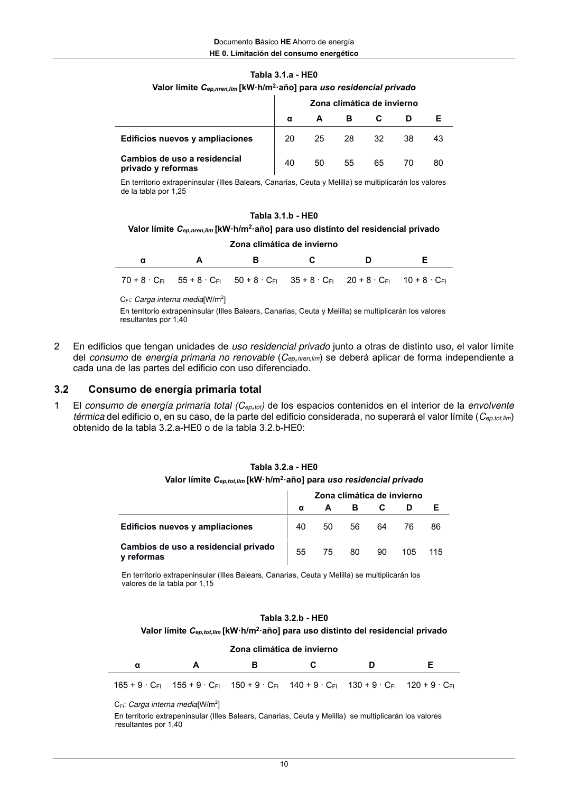

DB-HE Ahorro de energía · edición 2022-06-14 · capa oficial
Documento DB-HE-oficial · SHA-256 del PDF 7f890bd495552e979f83f72c5f5c7b642e745911a8e343a7b5b73023ce0e1f05
Copia fiel del PDF fuente · Fuente oficial
Ficha de la disposición en la fuente oficial
Formatos: JSON del segmento · Markdown
Cuantificación de la exigencia 3.1 Consumo de energía primaria no renovable 1 El consumo de energía primaria no renovable (Cep,nren) de los espacios contenidos en el interior de la envolvente térmica del edificio o, en su caso, de la parte del edificio considerada, no superará el valor límite (Cep,nren,lim) obtenido de la tabla 3.1.a-HE0 o la tabla 3.1.b-HE0: Documento Básico HE Ahorro de energía HE 0. Limitación del consumo energético 10 Tabla 3.1.a - HE0 Valor límite Cep,nren,lim [kW·h/m2·año] para uso residencial privado Zona climática de invierno α A B C D E Edificios nuevos y ampliaciones 20 25 28 32 38 43 Cambios de uso a residencial privado y reformas 40 50 55 65 70 80 En territorio extrapeninsular (Illes Balears, Canarias, Ceuta y Melilla) se multiplicarán los valores de la tabla por 1,25 Tabla 3.1.b - HE0 Valor límite Cep,nren,lim [kW·h/m2·año] para uso distinto del residencial privado Zona climática de invierno α A B C D E 70 + 8 · CFI 55 + 8 · CFI 50 + 8 · CFI 35 + 8 · CFI 20 + 8 · CFI 10 + 8 · CFI CFI: Carga interna media[W/m2] En territorio extrapeninsular (Illes Balears, Canarias, Ceuta y Melilla) se multiplicarán los valores resultantes por 1,40 2 En edificios que tengan unidades de uso residencial privado junto a otras de distinto uso, el valor límite del consumo de energía primaria no renovable (Cep,nren,lim) se deberá aplicar de forma independiente a cada una de las partes del edificio con uso diferenciado. 3.2
